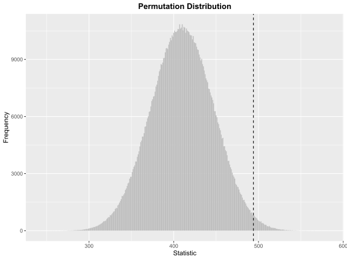

Overview
This package implements some of the non-parametric tests in chapters 1-5 of Higgins (2003).
Examples in the book can be found here.
Installation
# install.packages("pak")
pak::pkg_install("qddyy/LearnNonparam")Usage
set.seed(2023)-
Create a test object (for example, a
Wilcoxonobject)t <- Wilcoxon$new(alternative = "greater", type = "permu", n_permu = 1e7)or you can use
pmt(permutation test) function (**Recommended*):t <- pmt("twosample.wilcoxon", alternative = "greater", type = "permu", n_permu = 1e7) -
Test some data (
vector|data.frame|list) -
Check the results
t$p_value #> [1] 0.0405571 t$print(digits = 2) #> #> Two Sample Wilcoxon Test #> #> scoring: rank type: permu(1e+07) method: default #> statistic = 475, p_value = 0.041 #> alternative hypothesis: true location shift is greater than 0 #> estimate: 0.52 #> 95% confidence interval: -0.064 1.284 t$plot(style = "ggplot2", binwidth = 1) #> Loading required namespace: ggplot2
-
Modify some attributes and see how the results change
t$type <- "approx" t$p_value #> [1] 0.04051587
There is also support for chaining methods, which means that you can do things like
t <- pmt(...)$test(...)$print(...)$plot(...)Tips
Check
?PermuTest(all tests’ base class) for all available methods and attributes.-
pmts()for all available tests.pmts()key class test onesample.quantile Quantile Quantile Test onesample.cdf CDF Cumulative Distribution Function twosample.difference Difference Two Sample Test Based on Mean or Median twosample.wilcoxon Wilcoxon Two Sample Wilcoxon Test twosample.scoresum ScoreSum Score Sum Test twosample.ansari AnsariBradley Ansari-Bradley Test twosample.siegel SiegelTukey Siegel-Tukey Test twosample.rmd RatioMeanDeviance Ratio Mean Deviance Test twosample.ks KolmogorovSmirnov Two Sample Kolmogorov-Smirnov Test ksample.anova ANOVA K Sample Test Based on F Statistic ksample.kw KruskalWallis Kruskal-Wallis Test ksample.jt JonckheereTerpstra Jonckheere-Terpstra Test multicomp.t MultiCompT Multiple Comparison Based on t Statistic multicomp.tukey TukeyHSD Tukey’s HSD paired.sign Sign Sign Test paired.signeddiff SignedDiff Paired Comparison Based on Signed Differences rcbd.anova RCBDANOVA ANOVA for Randomized Complete Block Design rcbd.friedman Friedman Friedman Test rcbd.page Page Page Test association.corr Correlation Two Sample Test Based on Correlation Coefficient table.chisq ChiSquare Contingency Table Test Based on Chi-square Statistic